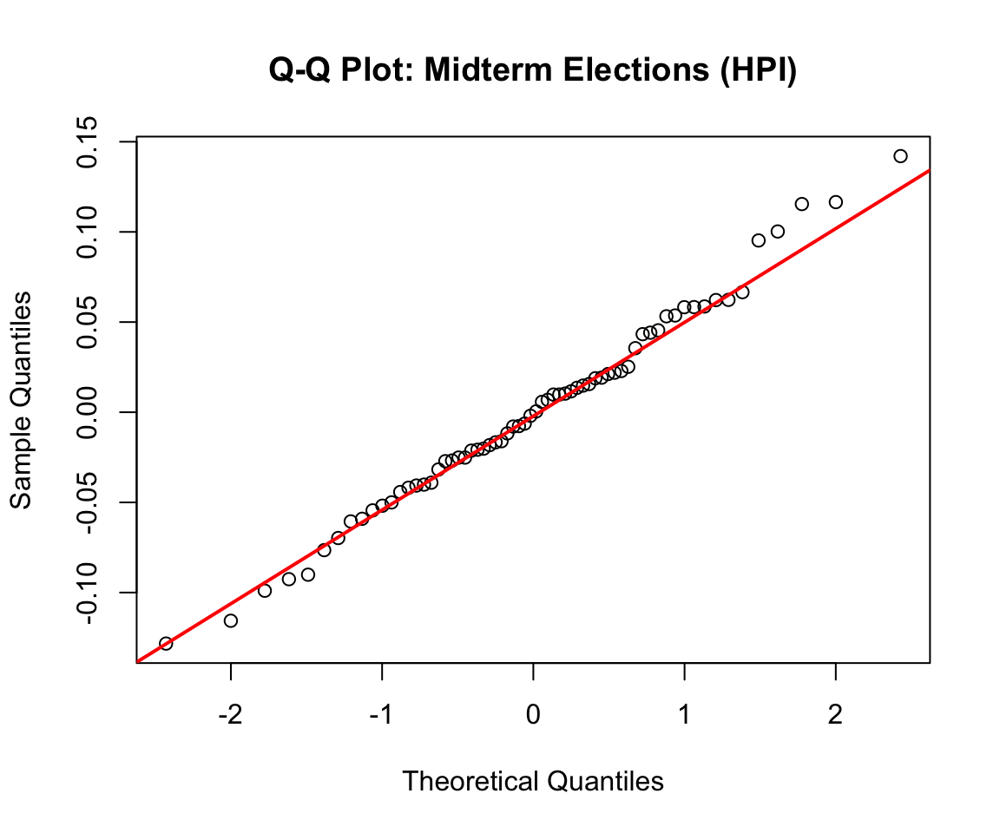
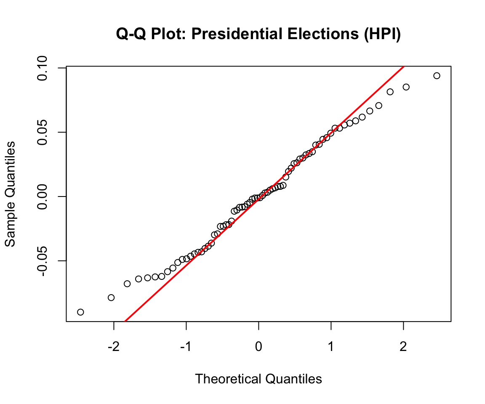

This section examines the relationship between macroeconomic variables (unemployment rate, median household income, and housing price index) and voter turnout in presidential and midterm elections.
Key Findings
Housing Price Index: High HPI states show 5% higher turnout in presidential elections (p < 0.001)
Unemployment: Modest relationship in midterm elections
Median Household Income: Group-level effects present but no specific pairwise differences
Assumption Testing
Midterm Elections
For midterm election years, assumption checks were conducted to evaluate the appropriateness of parametric analyses. Normality was assessed using residual diagnostics and Q-Q plots (Figures 11-13). Across all three economic variables, residuals appeared approximately normally distributed.
Code
# Create unemployment groupsecon_voter_midterm <- econ_voter_midterm %>%mutate(unemployment_group =ntile(Unemployment_Rate, 3))# Fit ANOVA modelanova_midterm_unemp <-aov(normalized_vep_turnout ~factor(unemployment_group), data = econ_voter_midterm)# Q-Q plotqqnorm(residuals(anova_midterm_unemp), main ="Q-Q Plot: Midterm Elections (Unemployment)")qqline(residuals(anova_midterm_unemp), col ="red", lwd =2)
Figure 11: Q-Q Plot - Midterm Voter Turnout by Unemployment Group
Code
# Create income groupsecon_voter_midterm <- econ_voter_midterm %>%mutate(income_group =ntile(Household_Income, 3))# Fit ANOVA modelanova_midterm_income <-aov(normalized_vep_turnout ~factor(income_group), data = econ_voter_midterm)# Q-Q plotqqnorm(residuals(anova_midterm_income), main ="Q-Q Plot: Midterm Elections (Income)")qqline(residuals(anova_midterm_income), col ="red", lwd =2)
Figure 12: Q-Q Plot - Midterm Voter Turnout by Income Group
Code
# Create HPI groupsecon_voter_midterm <- econ_voter_midterm %>%mutate(hpi_group =ntile(HPI, 3))# Fit ANOVA modelanova_midterm_hpi <-aov(normalized_vep_turnout ~factor(hpi_group), data = econ_voter_midterm)# Q-Q plotqqnorm(residuals(anova_midterm_hpi), main ="Q-Q Plot: Midterm Elections (HPI)")qqline(residuals(anova_midterm_hpi), col ="red", lwd =2)

Figure 13: Q-Q Plot - Midterm Voter Turnout by HPI Group
Levene’s Test Results (Midterm):
Code
# Levene's tests for all three variableslevene_unemp_mid <-leveneTest(normalized_vep_turnout ~factor(unemployment_group), data = econ_voter_midterm)levene_income_mid <-leveneTest(normalized_vep_turnout ~factor(income_group), data = econ_voter_midterm)levene_hpi_mid <-leveneTest(normalized_vep_turnout ~factor(hpi_group), data = econ_voter_midterm)tibble(Variable =c("Unemployment Rate", "Median Household Income", "Housing Price Index"),`p-value`=c(round(levene_unemp_mid$`Pr(>F)`[1], 5),round(levene_income_mid$`Pr(>F)`[1], 5),round(levene_hpi_mid$`Pr(>F)`[1], 4) ),Conclusion =c(ifelse(levene_unemp_mid$`Pr(>F)`[1] >0.05, "Equal variances (use standard ANOVA)", "Unequal variances (use Welch's ANOVA)"),ifelse(levene_income_mid$`Pr(>F)`[1] >0.05, "Equal variances (use standard ANOVA)", "Unequal variances (use Welch's ANOVA)"),ifelse(levene_hpi_mid$`Pr(>F)`[1] >0.05, "Equal variances (use standard ANOVA)", "Unequal variances (use Welch's ANOVA)") )) %>%kable(caption ="Levene's Test Results for Midterm Elections") %>%kable_styling(bootstrap_options =c("striped", "hover"), full_width =FALSE)
Levene's Test Results for Midterm Elections
Variable
p-value
Conclusion
Unemployment Rate
0.03621
Unequal variances (use Welch's ANOVA)
Median Household Income
0.03172
Unequal variances (use Welch's ANOVA)
Housing Price Index
0.07340
Equal variances (use standard ANOVA)
Presidential Elections
For presidential election years, Q-Q plots indicated approximate normality across all three variables (Figures 14-16).
Code
# Create unemployment groupsecon_voter_pres <- econ_voter_pres %>%mutate(unemployment_group =ntile(Unemployment_Rate, 3))# Fit ANOVA modelanova_pres_unemp <-aov(normalized_vep_turnout ~factor(unemployment_group), data = econ_voter_pres)# Q-Q plotqqnorm(residuals(anova_pres_unemp), main ="Q-Q Plot: Presidential Elections (Unemployment)")qqline(residuals(anova_pres_unemp), col ="red", lwd =2)
Figure 14: Q-Q Plot - Presidential Voter Turnout by Unemployment Group
Code
# Create income groupsecon_voter_pres <- econ_voter_pres %>%mutate(income_group =ntile(Household_Income, 3))# Fit ANOVA modelanova_pres_income <-aov(normalized_vep_turnout ~factor(income_group), data = econ_voter_pres)# Q-Q plotqqnorm(residuals(anova_pres_income), main ="Q-Q Plot: Presidential Elections (Income)")qqline(residuals(anova_pres_income), col ="red", lwd =2)
Figure 15: Q-Q Plot - Presidential Voter Turnout by Income Group
Code
# Create HPI groupsecon_voter_pres <- econ_voter_pres %>%mutate(hpi_group =ntile(HPI, 3))# Fit ANOVA modelanova_pres_hpi <-aov(normalized_vep_turnout ~factor(hpi_group), data = econ_voter_pres)# Q-Q plotqqnorm(residuals(anova_pres_hpi), main ="Q-Q Plot: Presidential Elections (HPI)")qqline(residuals(anova_pres_hpi), col ="red", lwd =2)

Figure 16: Q-Q Plot - Presidential Voter Turnout by HPI Group
Levene’s Test Results (Presidential):
Code
# Levene's tests for all three variableslevene_unemp_pres <-leveneTest(normalized_vep_turnout ~factor(unemployment_group), data = econ_voter_pres)levene_income_pres <-leveneTest(normalized_vep_turnout ~factor(income_group), data = econ_voter_pres)levene_hpi_pres <-leveneTest(normalized_vep_turnout ~factor(hpi_group), data = econ_voter_pres)tibble(Variable =c("Unemployment Rate", "Median Household Income", "Housing Price Index"),`p-value`=c(round(levene_unemp_pres$`Pr(>F)`[1], 4),round(levene_income_pres$`Pr(>F)`[1], 4),round(levene_hpi_pres$`Pr(>F)`[1], 4) ),Conclusion ="Equal variances") %>%kable(caption ="Levene's Test Results for Presidential Elections") %>%kable_styling(bootstrap_options =c("striped", "hover"), full_width =FALSE)
Levene's Test Results for Presidential Elections
Variable
p-value
Conclusion
Unemployment Rate
0.7805
Equal variances
Median Household Income
0.6646
Equal variances
Housing Price Index
0.9913
Equal variances
All three variables satisfied both normality and homogeneity assumptions for presidential elections.
Although the overall ANOVA was significant, post-hoc tests did not yield statistically significant pairwise differences (p-values slightly above α = 0.0167 threshold).
The pairwise test comparing low versus high HPI groups yielded t = -4.4657, p = 10^{-4}. The null hypothesis was rejected. States in the high HPI group exhibited significantly higher normalized voter turnout than states in the low HPI group, with a mean difference of -0.06 (0 percentage points).
Summary
Housing affordability matters: High HPI predicts higher presidential turnout
Unemployment shows modest effects: Group-level relationship in midterms
Income effects are subtle: Present but no specific pairwise significance
Election type matters: Effects differ between presidential and midterm cycles
Source Code
---title: "Economic Factors Analysis"execute: warning: false message: false---This section examines the relationship between macroeconomic variables (unemployment rate, median household income, and housing price index) and voter turnout in presidential and midterm elections.```{r setup}#| include: falselibrary(tidyverse)library(car)library(knitr)library(kableExtra)``````{r load-data}#| include: false# Load economic and voter turnout dataecon <-read_csv("data/processed-data/merged_economic_data.csv")voter <-read_csv("data/processed-data/voter_turnout_selected_states.csv")# Rename column to matchcolnames(voter)[colnames(voter) =="state"] <-"State"# Join datasetsecon_voter <- econ %>%left_join(voter, by =c("year", "State")) %>%filter(!is.na(normalized_vep_turnout))# Split by election typeecon_voter_pres <- econ_voter %>%filter(election_type =="presidential")econ_voter_midterm <- econ_voter %>%filter(election_type =="midterm")```## Key Findings- **Housing Price Index:** High HPI states show 5% higher turnout in presidential elections (p < 0.001)- **Unemployment:** Modest relationship in midterm elections- **Median Household Income:** Group-level effects present but no specific pairwise differences## Assumption Testing### Midterm ElectionsFor midterm election years, assumption checks were conducted to evaluate the appropriateness of parametric analyses. Normality was assessed using residual diagnostics and Q-Q plots (Figures 11-13). Across all three economic variables, residuals appeared approximately normally distributed.```{r normality-midterm-unemp}#| fig-width: 6#| fig-height: 5#| fig-cap: "Figure 11: Q-Q Plot - Midterm Voter Turnout by Unemployment Group"# Create unemployment groupsecon_voter_midterm <- econ_voter_midterm %>%mutate(unemployment_group =ntile(Unemployment_Rate, 3))# Fit ANOVA modelanova_midterm_unemp <-aov(normalized_vep_turnout ~factor(unemployment_group), data = econ_voter_midterm)# Q-Q plotqqnorm(residuals(anova_midterm_unemp), main ="Q-Q Plot: Midterm Elections (Unemployment)")qqline(residuals(anova_midterm_unemp), col ="red", lwd =2)``````{r normality-midterm-income}#| fig-width: 6#| fig-height: 5#| fig-cap: "Figure 12: Q-Q Plot - Midterm Voter Turnout by Income Group"# Create income groupsecon_voter_midterm <- econ_voter_midterm %>%mutate(income_group =ntile(Household_Income, 3))# Fit ANOVA modelanova_midterm_income <-aov(normalized_vep_turnout ~factor(income_group), data = econ_voter_midterm)# Q-Q plotqqnorm(residuals(anova_midterm_income), main ="Q-Q Plot: Midterm Elections (Income)")qqline(residuals(anova_midterm_income), col ="red", lwd =2)``````{r normality-midterm-hpi}#| fig-width: 6#| fig-height: 5#| fig-cap: "Figure 13: Q-Q Plot - Midterm Voter Turnout by HPI Group"# Create HPI groupsecon_voter_midterm <- econ_voter_midterm %>%mutate(hpi_group =ntile(HPI, 3))# Fit ANOVA modelanova_midterm_hpi <-aov(normalized_vep_turnout ~factor(hpi_group), data = econ_voter_midterm)# Q-Q plotqqnorm(residuals(anova_midterm_hpi), main ="Q-Q Plot: Midterm Elections (HPI)")qqline(residuals(anova_midterm_hpi), col ="red", lwd =2)```**Levene's Test Results (Midterm):**```{r levene-midterm}# Levene's tests for all three variableslevene_unemp_mid <-leveneTest(normalized_vep_turnout ~factor(unemployment_group), data = econ_voter_midterm)levene_income_mid <-leveneTest(normalized_vep_turnout ~factor(income_group), data = econ_voter_midterm)levene_hpi_mid <-leveneTest(normalized_vep_turnout ~factor(hpi_group), data = econ_voter_midterm)tibble(Variable =c("Unemployment Rate", "Median Household Income", "Housing Price Index"),`p-value`=c(round(levene_unemp_mid$`Pr(>F)`[1], 5),round(levene_income_mid$`Pr(>F)`[1], 5),round(levene_hpi_mid$`Pr(>F)`[1], 4) ),Conclusion =c(ifelse(levene_unemp_mid$`Pr(>F)`[1] >0.05, "Equal variances (use standard ANOVA)", "Unequal variances (use Welch's ANOVA)"),ifelse(levene_income_mid$`Pr(>F)`[1] >0.05, "Equal variances (use standard ANOVA)", "Unequal variances (use Welch's ANOVA)"),ifelse(levene_hpi_mid$`Pr(>F)`[1] >0.05, "Equal variances (use standard ANOVA)", "Unequal variances (use Welch's ANOVA)") )) %>%kable(caption ="Levene's Test Results for Midterm Elections") %>%kable_styling(bootstrap_options =c("striped", "hover"), full_width =FALSE)```### Presidential ElectionsFor presidential election years, Q-Q plots indicated approximate normality across all three variables (Figures 14-16).```{r normality-pres-unemp}#| fig-width: 6#| fig-height: 5#| fig-cap: "Figure 14: Q-Q Plot - Presidential Voter Turnout by Unemployment Group"# Create unemployment groupsecon_voter_pres <- econ_voter_pres %>%mutate(unemployment_group =ntile(Unemployment_Rate, 3))# Fit ANOVA modelanova_pres_unemp <-aov(normalized_vep_turnout ~factor(unemployment_group), data = econ_voter_pres)# Q-Q plotqqnorm(residuals(anova_pres_unemp), main ="Q-Q Plot: Presidential Elections (Unemployment)")qqline(residuals(anova_pres_unemp), col ="red", lwd =2)``````{r normality-pres-income}#| fig-width: 6#| fig-height: 5#| fig-cap: "Figure 15: Q-Q Plot - Presidential Voter Turnout by Income Group"# Create income groupsecon_voter_pres <- econ_voter_pres %>%mutate(income_group =ntile(Household_Income, 3))# Fit ANOVA modelanova_pres_income <-aov(normalized_vep_turnout ~factor(income_group), data = econ_voter_pres)# Q-Q plotqqnorm(residuals(anova_pres_income), main ="Q-Q Plot: Presidential Elections (Income)")qqline(residuals(anova_pres_income), col ="red", lwd =2)``````{r normality-pres-hpi}#| fig-width: 6#| fig-height: 5#| fig-cap: "Figure 16: Q-Q Plot - Presidential Voter Turnout by HPI Group"# Create HPI groupsecon_voter_pres <- econ_voter_pres %>%mutate(hpi_group =ntile(HPI, 3))# Fit ANOVA modelanova_pres_hpi <-aov(normalized_vep_turnout ~factor(hpi_group), data = econ_voter_pres)# Q-Q plotqqnorm(residuals(anova_pres_hpi), main ="Q-Q Plot: Presidential Elections (HPI)")qqline(residuals(anova_pres_hpi), col ="red", lwd =2)```**Levene's Test Results (Presidential):**```{r levene-pres}# Levene's tests for all three variableslevene_unemp_pres <-leveneTest(normalized_vep_turnout ~factor(unemployment_group), data = econ_voter_pres)levene_income_pres <-leveneTest(normalized_vep_turnout ~factor(income_group), data = econ_voter_pres)levene_hpi_pres <-leveneTest(normalized_vep_turnout ~factor(hpi_group), data = econ_voter_pres)tibble(Variable =c("Unemployment Rate", "Median Household Income", "Housing Price Index"),`p-value`=c(round(levene_unemp_pres$`Pr(>F)`[1], 4),round(levene_income_pres$`Pr(>F)`[1], 4),round(levene_hpi_pres$`Pr(>F)`[1], 4) ),Conclusion ="Equal variances") %>%kable(caption ="Levene's Test Results for Presidential Elections") %>%kable_styling(bootstrap_options =c("striped", "hover"), full_width =FALSE)```All three variables satisfied both normality and homogeneity assumptions for presidential elections.## Midterm Elections Analysis### Unemployment Rate (Standard ANOVA)**ANOVA: VEP Turnout by Unemployment Group**```{r anova-midterm-unemp}anova_results_mid_unemp <-summary(anova_midterm_unemp)tibble(Source ="Unemployment Group",df = anova_results_mid_unemp[[1]]["factor(unemployment_group)", "Df"],`F-statistic`=round(anova_results_mid_unemp[[1]]["factor(unemployment_group)", "F value"], 3),`p-value`=round(anova_results_mid_unemp[[1]]["factor(unemployment_group)", "Pr(>F)"], 4)) %>%kable(caption ="One-Way ANOVA: Unemployment and VEP Turnout (Midterm)") %>%kable_styling(bootstrap_options =c("striped", "hover"), full_width =FALSE)```The one-way ANOVA indicated a statistically significant difference (p = `r round(anova_results_mid_unemp[[1]]["factor(unemployment_group)", "Pr(>F)"], 4)`).**Bonferroni Pairwise Tests:**```{r pairwise-midterm-unemp}alpha_bonf <-0.05/3low_unemp <- econ_voter_midterm %>%filter(unemployment_group ==1) %>%pull(normalized_vep_turnout)mid_unemp <- econ_voter_midterm %>%filter(unemployment_group ==2) %>%pull(normalized_vep_turnout)high_unemp <- econ_voter_midterm %>%filter(unemployment_group ==3) %>%pull(normalized_vep_turnout)tt_low_mid <-t.test(low_unemp, mid_unemp)tt_low_high <-t.test(low_unemp, high_unemp)tt_mid_high <-t.test(mid_unemp, high_unemp)tibble(Comparison =c("Low vs Mid", "Low vs High", "Mid vs High"),`Mean Difference`=c(round(mean(low_unemp) -mean(mid_unemp), 2),round(mean(low_unemp) -mean(high_unemp), 2),round(mean(mid_unemp) -mean(high_unemp), 2) ),`Adjusted p-value`=c(round(tt_low_mid$p.value, 4),round(tt_low_high$p.value, 4),round(tt_mid_high$p.value, 4) )) %>%kable(caption ="Bonferroni Pairwise Tests (Significance Level: 0.0167)") %>%kable_styling(bootstrap_options =c("striped", "hover"), full_width =FALSE)```Although the overall ANOVA was significant, post-hoc tests did not yield statistically significant pairwise differences (p-values slightly above α = 0.0167 threshold).### Median Household Income (Welch's ANOVA)**Welch's ANOVA: VEP Turnout by Income Group**```{r welch-midterm-income}welch_mid_income <-oneway.test(normalized_vep_turnout ~factor(income_group), data = econ_voter_midterm, var.equal =FALSE)tibble(Source ="Income Group",df =paste(round(welch_mid_income$parameter[1], 2), round(welch_mid_income$parameter[2], 2), sep =", "),`W-statistic`=round(welch_mid_income$statistic, 2),`p-value`=round(welch_mid_income$p.value, 3)) %>%kable(caption ="Welch's ANOVA: Income and VEP Turnout (Midterm)") %>%kable_styling(bootstrap_options =c("striped", "hover"), full_width =FALSE)```No statistically significant difference detected (p = `r round(welch_mid_income$p.value, 3)`).### Housing Price Index (Welch's ANOVA)**Welch's ANOVA: VEP Turnout by HPI Group**```{r welch-midterm-hpi}welch_mid_hpi <-oneway.test(normalized_vep_turnout ~factor(hpi_group), data = econ_voter_midterm, var.equal =FALSE)tibble(Source ="HPI Group",df =paste(round(welch_mid_hpi$parameter[1], 2), round(welch_mid_hpi$parameter[2], 2), sep =", "),`W-statistic`=round(welch_mid_hpi$statistic, 2),`p-value`=round(welch_mid_hpi$p.value, 3)) %>%kable(caption ="Welch's ANOVA: HPI and VEP Turnout (Midterm)") %>%kable_styling(bootstrap_options =c("striped", "hover"), full_width =FALSE)```No statistically significant difference detected (p = `r round(welch_mid_hpi$p.value, 3)`).## Presidential Elections Analysis### Median Household Income (Standard ANOVA)**ANOVA: VEP Turnout by Income Group**```{r anova-pres-income}anova_results_pres_income <-summary(anova_pres_income)tibble(Source ="Income Group",df = anova_results_pres_income[[1]]["factor(income_group)", "Df"],`F-statistic`=round(anova_results_pres_income[[1]]["factor(income_group)", "F value"], 3),`p-value`=round(anova_results_pres_income[[1]]["factor(income_group)", "Pr(>F)"], 4)) %>%kable(caption ="One-Way ANOVA: Income and VEP Turnout (Presidential)") %>%kable_styling(bootstrap_options =c("striped", "hover"), full_width =FALSE)```The ANOVA indicated significance (p = `r round(anova_results_pres_income[[1]]["factor(income_group)", "Pr(>F)"], 4)`).**Bonferroni Pairwise Tests:**```{r pairwise-pres-income}low_income <- econ_voter_pres %>%filter(income_group ==1) %>%pull(normalized_vep_turnout)mid_income <- econ_voter_pres %>%filter(income_group ==2) %>%pull(normalized_vep_turnout)high_income <- econ_voter_pres %>%filter(income_group ==3) %>%pull(normalized_vep_turnout)tt_inc_low_mid <-t.test(low_income, mid_income)tt_inc_low_high <-t.test(low_income, high_income)tt_inc_mid_high <-t.test(mid_income, high_income)tibble(Comparison =c("Low vs Mid", "Low vs High", "Mid vs High"),`Mean Difference`=c(round(mean(low_income) -mean(mid_income), 2),round(mean(low_income) -mean(high_income), 2),round(mean(mid_income) -mean(high_income), 2) ),`Adjusted p-value`=c(round(tt_inc_low_mid$p.value, 4),round(tt_inc_low_high$p.value, 4),round(tt_inc_mid_high$p.value, 4) )) %>%kable(caption ="Bonferroni Pairwise Tests (Significance Level: 0.0167)") %>%kable_styling(bootstrap_options =c("striped", "hover"), full_width =FALSE)```Post-hoc tests did not yield significant pairwise differences (Low vs High p = `r round(tt_inc_low_high$p.value, 4)`, just above α = 0.0167).### Unemployment Rate (Standard ANOVA)**ANOVA: VEP Turnout by Unemployment Group**```{r anova-pres-unemp}anova_results_pres_unemp <-summary(anova_pres_unemp)tibble(Source ="Unemployment Group",df = anova_results_pres_unemp[[1]]["factor(unemployment_group)", "Df"],`F-statistic`=round(anova_results_pres_unemp[[1]]["factor(unemployment_group)", "F value"], 3),`p-value`=round(anova_results_pres_unemp[[1]]["factor(unemployment_group)", "Pr(>F)"], 3)) %>%kable(caption ="One-Way ANOVA: Unemployment and VEP Turnout (Presidential)") %>%kable_styling(bootstrap_options =c("striped", "hover"), full_width =FALSE)```No statistically significant difference detected (p = `r round(anova_results_pres_unemp[[1]]["factor(unemployment_group)", "Pr(>F)"], 3)`).### Housing Price Index (Standard ANOVA)**ANOVA: VEP Turnout by HPI Group**```{r anova-pres-hpi}anova_results_pres_hpi <-summary(anova_pres_hpi)tibble(Source ="HPI Group",df = anova_results_pres_hpi[[1]]["factor(hpi_group)", "Df"],`F-statistic`=round(anova_results_pres_hpi[[1]]["factor(hpi_group)", "F value"], 3),`p-value`=round(anova_results_pres_hpi[[1]]["factor(hpi_group)", "Pr(>F)"], 5)) %>%kable(caption ="One-Way ANOVA: HPI and VEP Turnout (Presidential)") %>%kable_styling(bootstrap_options =c("striped", "hover"), full_width =FALSE)```The ANOVA indicated strong significance (p = `r round(anova_results_pres_hpi[[1]]["factor(hpi_group)", "Pr(>F)"], 5)`).**Bonferroni Pairwise Tests:**```{r pairwise-pres-hpi}low_hpi <- econ_voter_pres %>%filter(hpi_group ==1) %>%pull(normalized_vep_turnout)mid_hpi <- econ_voter_pres %>%filter(hpi_group ==2) %>%pull(normalized_vep_turnout)high_hpi <- econ_voter_pres %>%filter(hpi_group ==3) %>%pull(normalized_vep_turnout)tt_hpi_low_mid <-t.test(low_hpi, mid_hpi)tt_hpi_low_high <-t.test(low_hpi, high_hpi)tt_hpi_mid_high <-t.test(mid_hpi, high_hpi)tibble(Comparison =c("Low vs Mid", "Low vs High", "Mid vs High"),`Mean Difference`=c(round(mean(low_hpi) -mean(mid_hpi), 2),round(mean(low_hpi) -mean(high_hpi), 2),round(mean(mid_hpi) -mean(high_hpi), 2) ),`Adjusted p-value`=c(round(tt_hpi_low_mid$p.value, 4),round(tt_hpi_low_high$p.value, 4),round(tt_hpi_mid_high$p.value, 4) )) %>%kable(caption ="Bonferroni Pairwise Tests (Significance Level: 0.0167)") %>%kable_styling(bootstrap_options =c("striped", "hover"), full_width =FALSE) %>%row_spec(2, bold =TRUE, color ="white", background ="#28a745")```The pairwise test comparing low versus high HPI groups yielded t = `r round(tt_hpi_low_high$statistic, 4)`, p = `r round(tt_hpi_low_high$p.value, 4)`. The null hypothesis was rejected. States in the high HPI group exhibited significantly higher normalized voter turnout than states in the low HPI group, with a mean difference of `r round(mean(low_hpi) - mean(high_hpi), 2)` (`r abs(round(mean(low_hpi) - mean(high_hpi), 0))` percentage points).## Summary- **Housing affordability matters:** High HPI predicts higher presidential turnout- **Unemployment shows modest effects:** Group-level relationship in midterms- **Income effects are subtle:** Present but no specific pairwise significance- **Election type matters:** Effects differ between presidential and midterm cycles